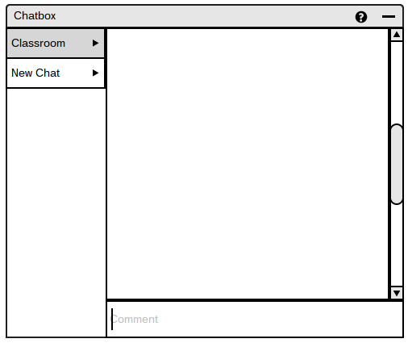
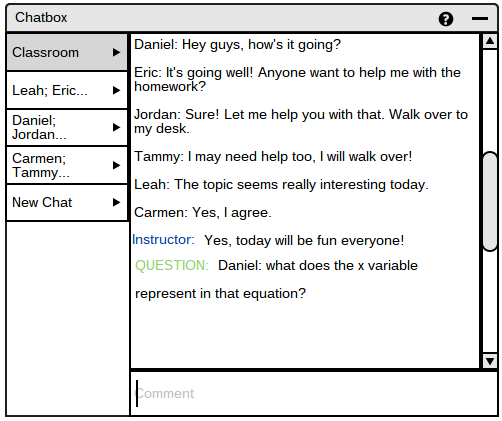
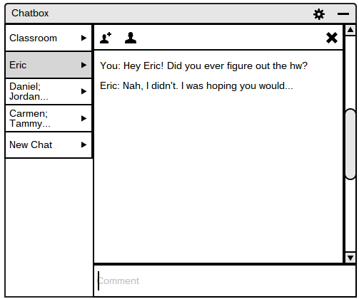

2.7.1. Multi-Participant Interaction
To chat with the entire classroom, user clicks on the chatbox icon on the taskbar as shown in Figure 85.
This opens a window that allows students to chat with fellow classmates as well as the instructor.
Figure 85: Chatbox Icon
Once the chatbox icon is clicked, the chatbox grows to full size as shown in Figure 86.
On the left side of the chatbox window, there is a list of chatrooms available to the user, which are all clickable for navigation.
By default, the chatbox directs the user to the classroom tab, which includes everyone on the roster and the instructor.

Figure 86: Initial Chatbox
To make a comment, user clicks on the Comment box and presses enter to post onto any chatroom.
Then, the comment appears instaneously in the chatroom the user is in.
As an example, Figure 87 shows a fully populated chatbox window for a student.

Figure 87: Full Student Chatbox
As chatrooms may include more than two users, the list of people in chatrooms are shorted with the ... symbol.
This way, when the chatroom tab with the names are clicked, it navigates the user to the chatroom where the user can see the list of people, add people and leave the room, as shown in Figure 88.

Figure 88: Private Student Chatroom
Prev: [none]
| Next: Student Question Asking
| Up: Chatbox
| Top: Index